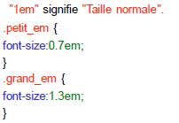
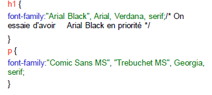
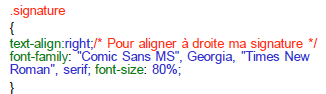
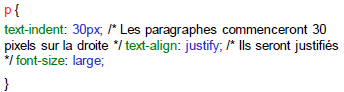
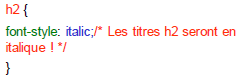

- Principe des CSS
- Format CSS
- Appel d’un fichier .css
- Directement dans le header du fichier HTML
- Appliquer un style à des balises
- Exemple CSS
- Des commentaires dans CSS
- Utiliser les classes
- L'attribut id
- Les balises universelles
- Exemple
- Imbrications de balises
- Taille du texte
- Polices
- Exemple
- Alignement simple
- L'indentation: la mise en retrait du texte
- Effets de style
- Les majuscules en CSS
- La décoration
- Les couleurs
- La notation hexadécimale
- La méthode RGB (Red-Green-Blue)
- Le fond
- La couleur de fond
- Exemple
- L'image de fond
- Effets sur les liens
- Les pseudo-formats
- Au passage de la souris
- Au moment du clic
- Première lettre et première ligne
- Retrait des listes
- Exemple
- Représentation de la puce
- Pour les listes non ordonnées (ul)
- Pour les listes ordonnées (ol)
- Changer l’image de la puce
- Dimensionnement et positionnement
- Mise en page
- Tableaux
- Formulaires
En em :
C’est une autre façon d’indiquer de manière relative la taille du texte. On doit indiquer la taille du texte par rapport à la taille normale de la police. 
Polices
La propriété CSS qui permet d'indiquer la police est : font-family
Vous devez indiquer le nom de la police comme ceci : font-family:police;
Pour éviter qu'il n'y ait de problème si l'internaute n'a pas la même police que vous, on met en général plusieurs noms de police, séparés par des virgules : font-family:police1, police2, police3, police4;
Le navigateur essaiera d'abord de mettre la police1. S'il ne l'a pas, il essaiera de mettre la police2. S'il ne l'a pas, il essaiera la police3 et ainsi de suite.
Voici une liste de polices qui fonctionnent bien sur la plupart des navigateurs :
Arial , Arial Black ,Comic Sans MS ,Courier New ,Georgia ,Impact ,Times New Roman ,Trebuchet MS , Verdana

Alignement simple
On utilise la propriété text-align, et on indique l’alignement désiré :
left :le texte sera aligné à gauche (c'est le réglage par défaut).
center: le texte sera centré.
right: le texte sera aligné à droite.
justify: le texte sera "justifié".

L'indentation: la mise en retrait du texte
Cela permet par exemple de faire commencer un paragraphe un peu plus à droite. On utilise la propriété text-indent On doit indiquer quelle est la taille du retrait :
on peut le faire en pixels, en centimètres, en millimètres...

Effets de style
Mettre en italique :
